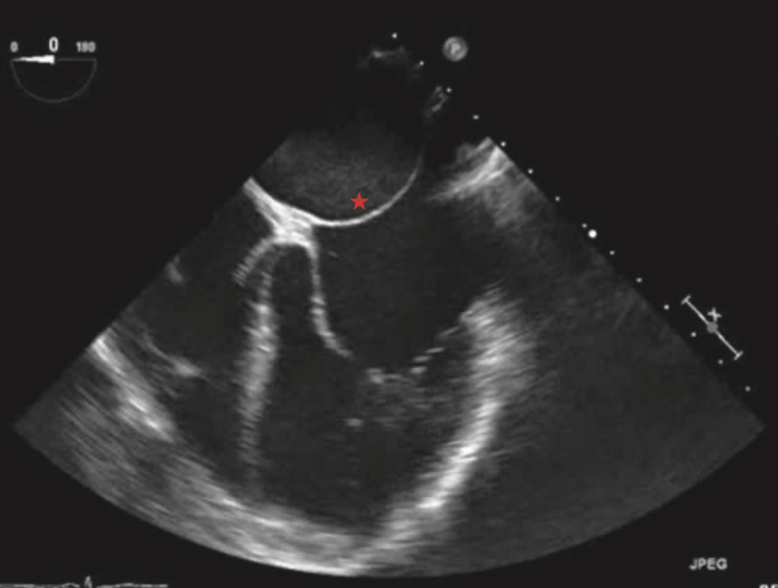

- 定義
- 流行病學
- 分類
- Type A：沒有合併ASD
- Type B：常合併ASD
- 病因
- 病生理
- 一層纖維肌肉性隔膜將左心房劃分為兩個腔室
- 上腔室接收肺靜脈回流
- 下腔室則與二尖瓣及左心室連通
- 常見合併心房中隔缺損（ASD）
- 通常存在於上腔室與右心房之間，較罕見的情況是下腔室與右心房之間
- 三心房症會導致肺靜脈回流受阻至左心房。阻力程度取決於以下幾項因素
- 左心房隔膜膜上開口（fenestration）的大小
- 心房中隔缺損（ASD）的大小
- 是否合併其他心臟異常
- 臨床特徵
- 若上、下腔室之間的交通口徑小於 3 毫米，患兒通常會在出生第一年內出現症狀，包括：
- 心輸出量低下
- 呼吸系統：呼吸急促、呼吸困難、鼻翼煽動
- 心血管：心搏過速、四肢冰冷、蒼白或發紺、微血管充填時間延長（>2秒）、低血壓偏低（特別是收縮壓）、周邊脈搏微弱
- 尿量減少
- 食慾差、體重不增、哺乳困難
- 嗜睡、昏迷、反應遲鈍
- 血氧飽和度降低
- 肺靜脈高壓
- 鬱血性心衰竭
- 頸靜脈怒張
- 聽診
- 肺動脈第二心音（S2）亢進（loud
pulmonary S2 sound）
- 右心室搏動感（right ventricular heave）
- 診斷

（圖說：三心房症病人的心臟超音波，星號 * 表示左心房的隔膜）
（Reference：Figure 20-22, P.768, Schwartz's
Principles of Surgery 11th Edition）
- 處置
- 手術
- 需使用體外循環（CPB）與心臟停跳（cardioplegic
arrest）
- 經由右心房切開（right atriotomy），再經由擴大的ASD進入肺靜脈腔室並切除該膜，手術後再以貼片關閉ASD。
- 若右心房體積較小，則可改為直接切開左心房上腔（於右肺靜脈前方），以切除隔膜
- 手術預後極佳，存活率接近100%
- 併發症
- Reference
- Sabiston
Textbook of Surgery 21st Edition
- Schwartz's
Principles of Surgery 11th Edition